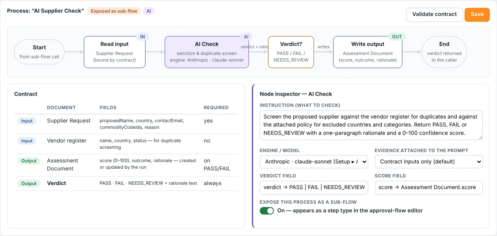

Értékesítés
Szerezzen ügyfeleket az ellenőrzött cégek között.
SELYVO Core
A SELYVO Core saját munkaterületet ad a nagyobb szervezeteknek – beszállítók, kérdőívek, katalógusok és MI-ellenőrzéses folyamatok –, a SELYVO Markethez kapcsolva.

SELYVO Core
Aktív, preferált, magas kockázatú és bevezetés alatt álló beszállítók az Ön által választott KPI-okkal, és minden beszállító-felvételi kérelem egyetlen várólistán.
Újrafelhasználható kérdéssorok bevezetéshez, értékeléshez és ESG-hez: a beszállítók igazolásokkal válaszolnak, a válaszok pontszámot kapnak.
Katalógus a munkatársaknak preferált tételekkel, csomagokkal és költséghelyenkénti keretekkel. Az igénylések egyenesen jóváhagyásra mennek.
Jóváhagyási folyamatok, amelyekben egy MI-ellenőrzés átvizsgál egy beszállítót vagy dokumentumot, és megfelelt, nem felelt meg vagy ellenőrzendő eredményt ad. Ember dönt.
Használja integrált SELYVO-modulokként, vagy egységes felületként a megtartott ERP-, CRM- és beszerzési rendszerei felett.
Minden korlátot és küszöbértéket az Ön operátorai állítanak be. Semmi sincs a kódba írva.

Kérdőívek bevezetéshez, értékeléshez és ESG-hez.

Igénylés és vásárlás: katalógus a munkatársaknak.

Folyamat MI-ellenőrzéssel mint jóváhagyási lépéssel.
A SELYVO Core a Csatlakoztatott rendszerek menüpontban kapcsolódik a Markethez.
A SELYVO Core kérdőívei eljutnak a beszállítóihoz a Marketen.
A Core a már használt rendszerei mellett működik.
Videó
Nézze meg a bemutató ezen részét: 5:12 · Csatlakoztatott rendszerek
Bemutató · 5:51
A SELYVO Market minden része, közvetlenül a termékben bemutatva: értékesítés és beszerzés, megrendelések, a SELYVO által ellenőrzött számlák, költségek, projektek, MailChat, készlet és csatlakoztatott rendszerek.
Ez a videó angol nyelvű.
Nem. A SELYVO Market önállóan is működik. A Core azoknak a szervezeteknek szól, amelyek saját folyamatokat és munkaterületet szeretnének.
Igen. Lehet az a rendszer, amelyben a munka zajlik, vagy egyetlen felület a megtartott rendszerek felett.
Egyetlen folyamattal, például a beszállítók bevezetésével vagy a munkatársak beszerzéseivel, előtte és utána is mérve.
Szerezzen ügyfeleket az ellenőrzött cégek között.
A megfelelő ajánlat, megbízható beszállítóktól.
Végezze el a munkát. Tartsa szem előtt a keretet.
Számlázás, ellenőrzés, pénz a számlán – kevesebb munkával.
A SELYVO-n minden céget ismer legalább egy másik. Kérjen meg egy ügyfelet vagy beszállítót, aki tag, hogy hívja meg Önt – vagy írjon nekünk.
Kapcsolat
Írjon nekünk a SELYVO Marketről, a SELYVO Core-ról vagy egy partnerségről. E-mailben válaszolunk.